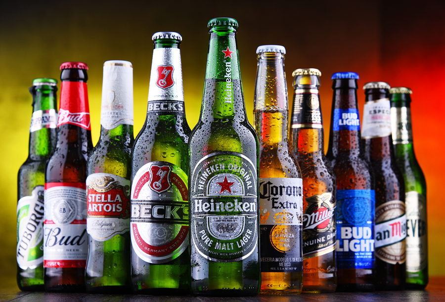
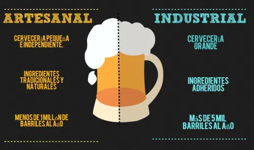

<ion-header>
    <ion-toolbar color="warning">
        <ion-buttons slot="start">
            <ion-menu-button menu="first"></ion-menu-button>
        </ion-buttons>
        <ion-title class="ion-text-start">Cervezas</ion-title>
    </ion-toolbar>
</ion-header>

<ion-content>

    <ion-card routerLink="/cervezas/marcas" color="warning">
        <br>
        <ion-card-title class="ion-text-center">Marcas de cervezas disponibles</ion-card-title>
        <br>
        
    </ion-card>

    <ion-card routerLink="/cervezas/estilos" color="warning">
        <br>
        <ion-card-title class="ion-text-center">Estilos de cervezas disponibles</ion-card-title>
        <br>
        
    </ion-card>

    <ion-card routerLink="/cervezas/artyind" color="warning">
        <br>
        <ion-card-title class="ion-text-center">Cervezas artesanales, industriales y extranjeras disponibles</ion-card-title>
        <br>
        
    </ion-card>

</ion-content>

<ion-tab-bar slot="bottom" color="warning">
    <ion-tab-button routerLink="../tabs/tab1">
        <ion-icon name="thermometer-outline"></ion-icon>
        <ion-label>% de Alcohol</ion-label>
    </ion-tab-button>

    <ion-tab-button routerLink="../tabs/tab2">
        <ion-icon name="search-sharp"></ion-icon>
        <ion-label>Búsqueda</ion-label>
    </ion-tab-button>

    <ion-tab-button routerLink="../tabs/tab3">
        <ion-icon name="people"></ion-icon>
        <ion-label>Social</ion-label>
    </ion-tab-button>
</ion-tab-bar>